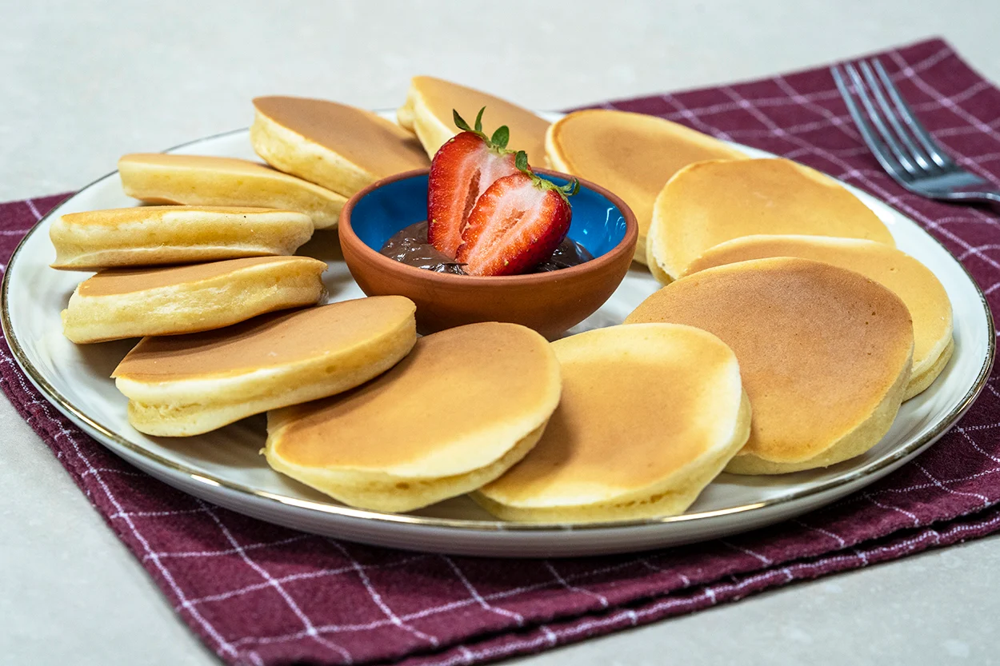
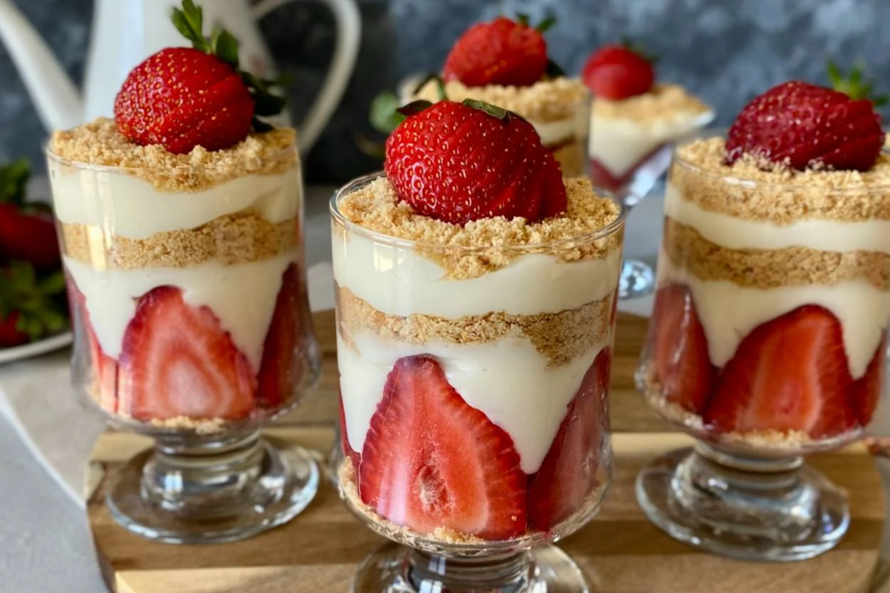
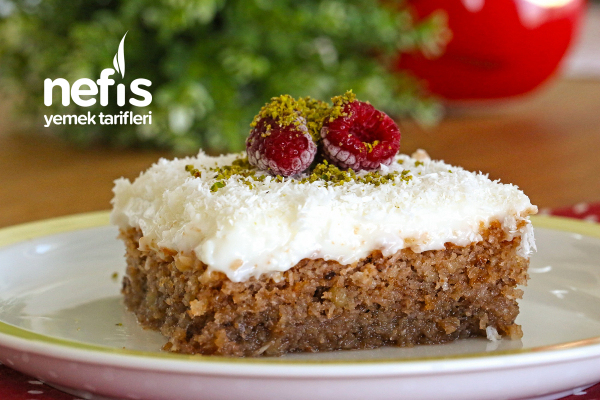
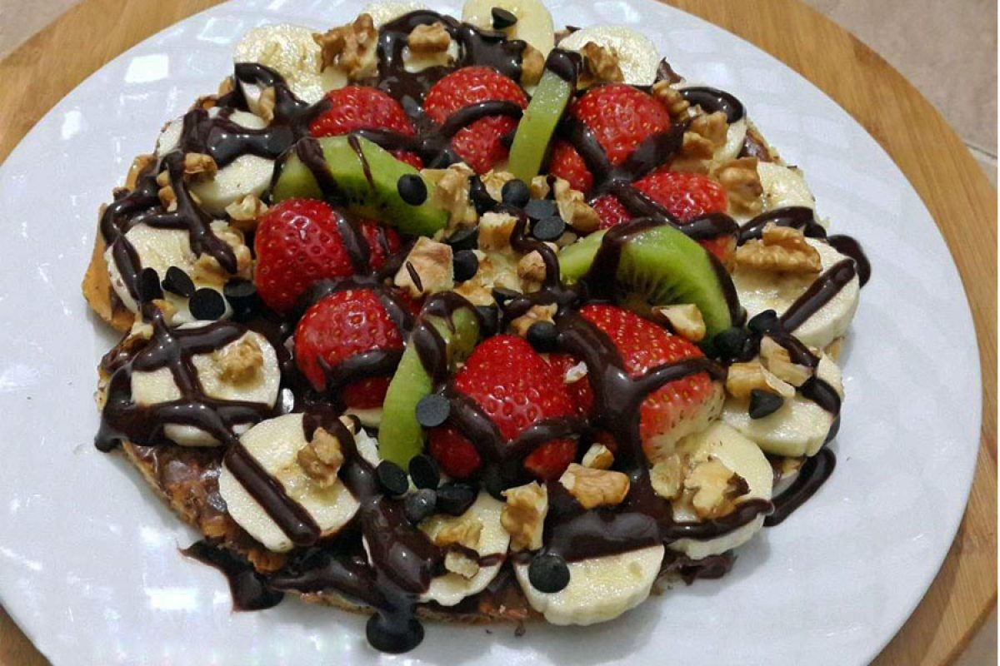
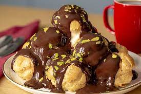
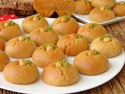
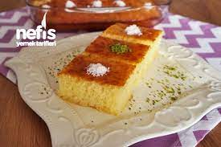
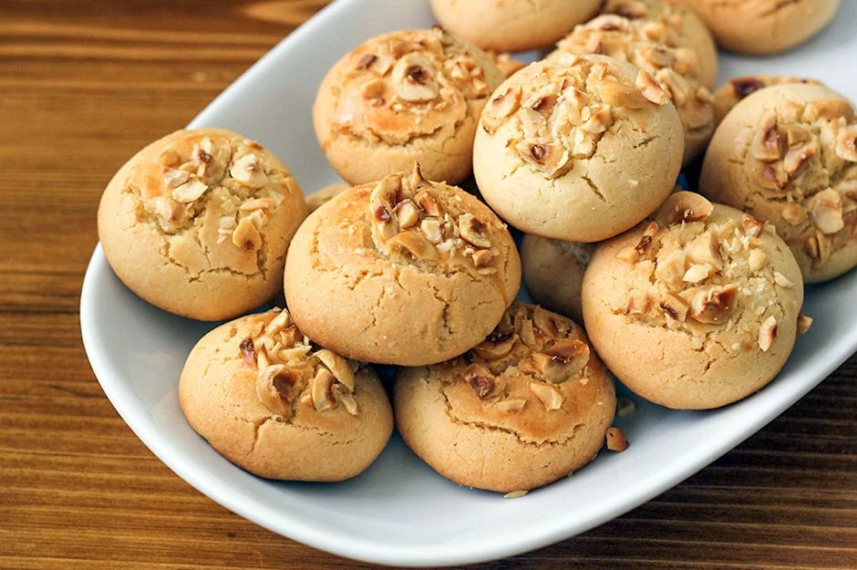

Pancakes: |
Magnolia: |
Kibris Dessert: |
Waffles: |
Perfect pancakes are easier to make than you think. This pancake recipe produces thick, fluffy, and all-around delicious pancakes with just a few ingredients that are probably already in your kitchen.Pancake Recepie |
Essentially a sort of trifle, the Turkish magnolia pudding is a layered dessert consisting of a homemade custard, crushed biscuits, and fresh fruit.Magnolia Recepie |
Kibris dessert, also known as Cypriot dessert, is a delectable treat originating from the island of Cyprus. This delightful dessert is characterized by its rich flavors and unique texturesKibris Dessert Recepie |
A waffle is a delicious breakfast or dessert item made from a batter cooked between two patterned plates, resulting in a distinctive grid-like appearance. It is typically crispy on the outside and soft on the inside.Waffle Recepie |
Profiterol |
Sekerpare: |
Revani: |
Cookies: |
A profiterole , cream puff , or is a filled French and Italian choux pastry ball with a typically sweet and moist filling of whipped cream, custard, pastry cream, or ice cream.Profiterol Recepie |
Sekerpare is one of the popular desserts in the Turkish cuisine. Mainly prepared by baking some soft balls of almond based pastry dipped in thick lemon-flavored sugar syrup.Sekerpare Recepie |
Revani is a classic Turkish semolina cake that is drenched in a simple lemony syrup and topped with desiccated coconut flakes. It tastes so good that everyone will ask for more.Revani Recepie |
This is the best chocolate chip cookies recipe ever! No funny ingredients, no chilling time, etc. Amazingly delicious, doughy yet still fully cooked, chocolate chip cookie that turns out perfectly every single time!Cookie Recepie |